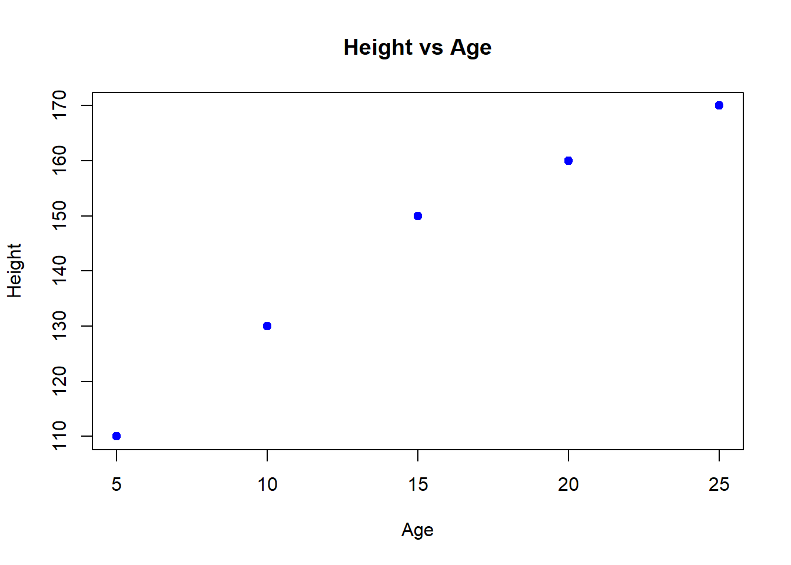
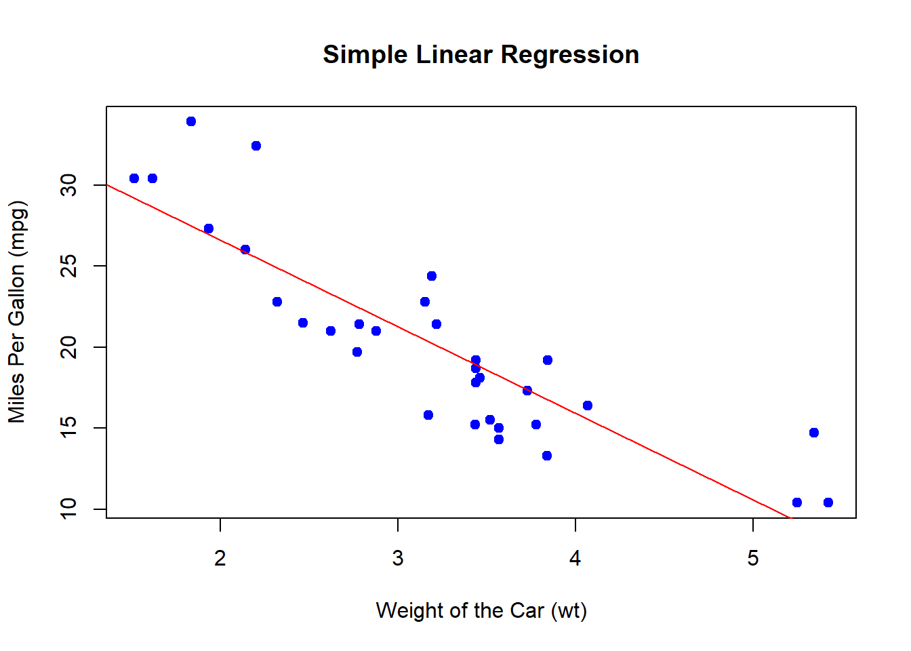
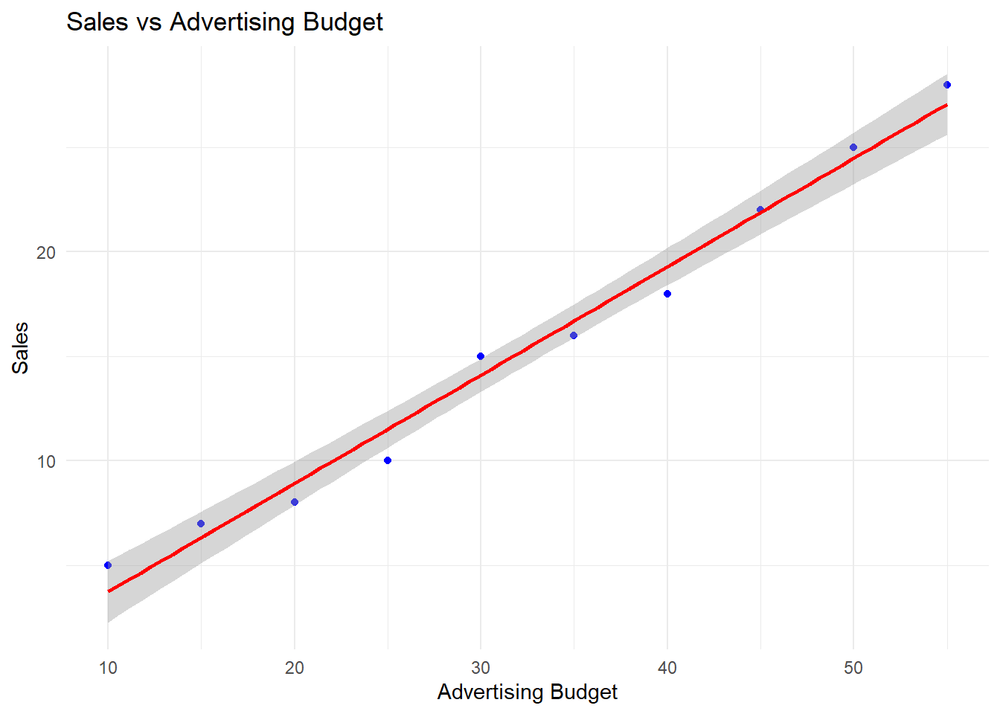
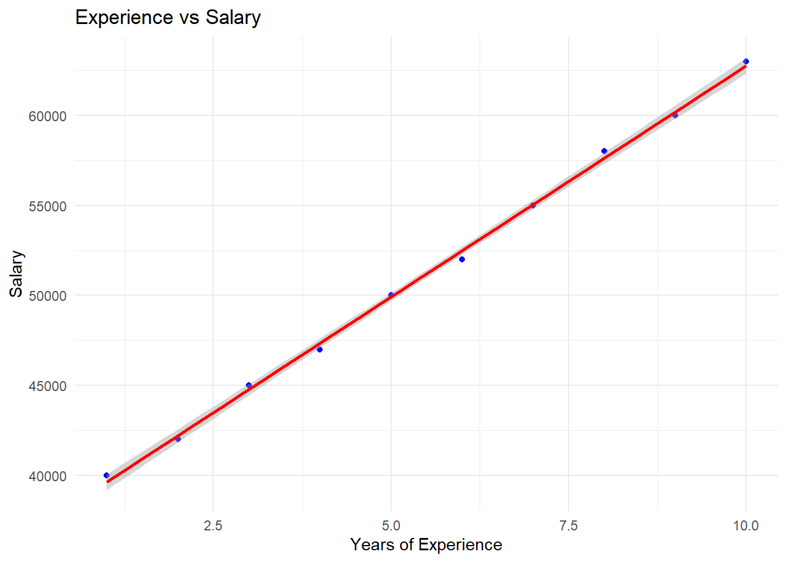
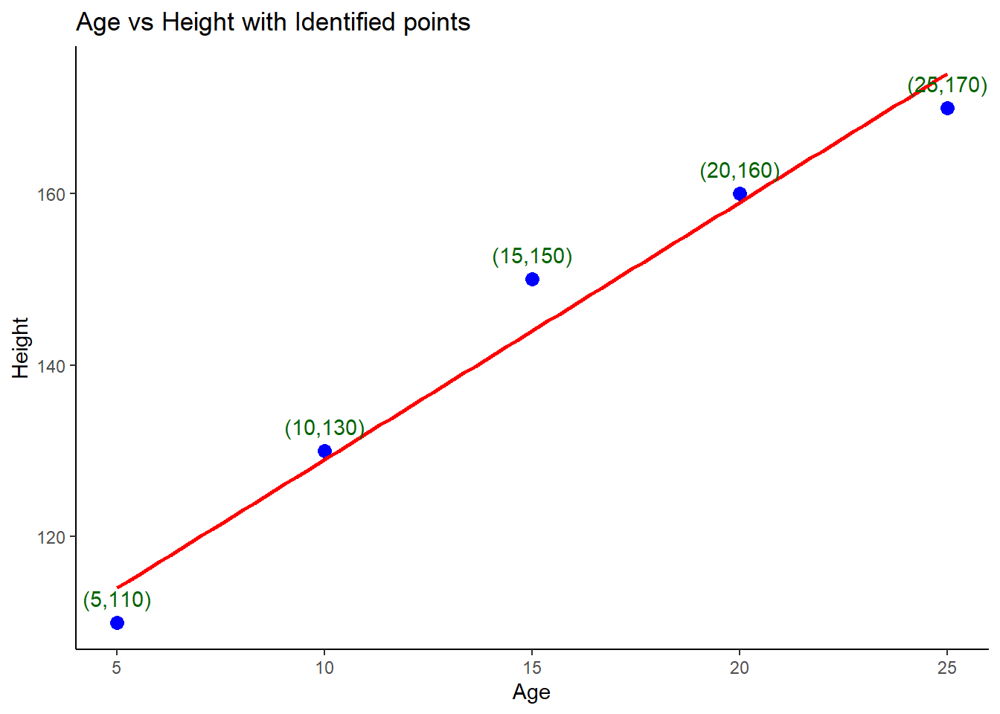
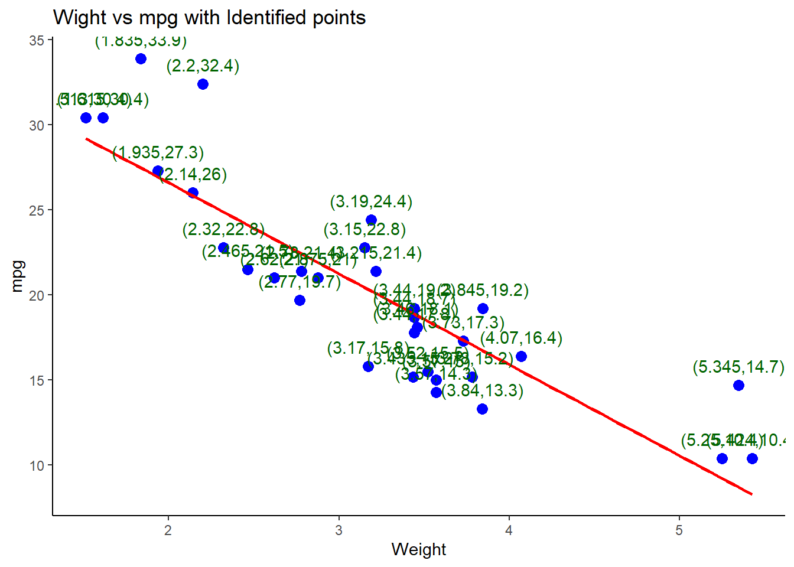
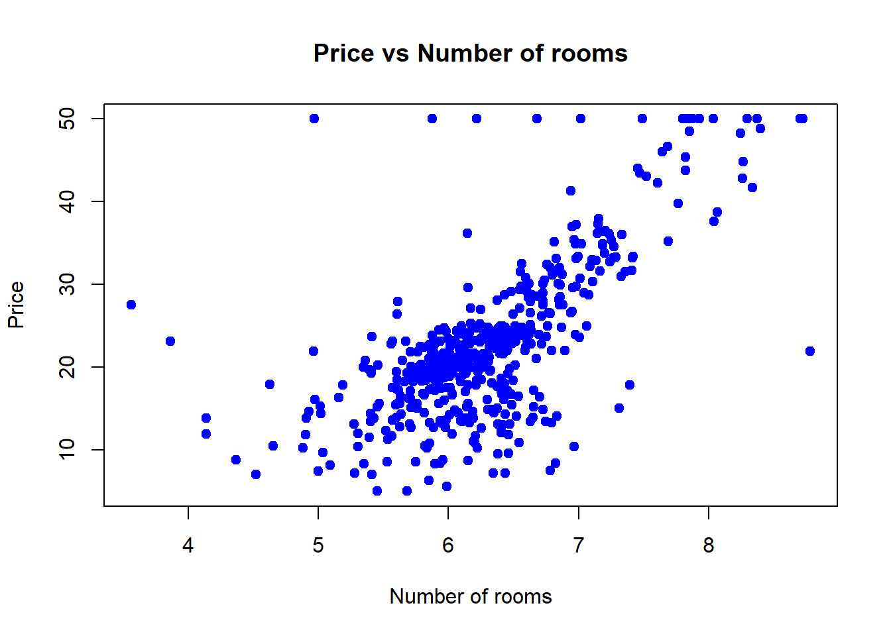

Chapter 5 Simple Linear Regression
Welcome to the world of Simple Linear Regression! 🎉 This statistical technique is super handy when you want to explore the relationship between two continuous variables. Essentially, it helps us predict the value of one variable based on the value of another.
For example, imagine you want to predict a student’s exam score based on the number of hours they studied. Here, the hours studied are the independent variable (or predictor), and the exam score is the dependent variable (or response).
What is Simple Linear Regression?
Simple linear regression is essentially about finding the line that best describes the relationship between two variables(independent and dependent variables) in your data. The line is called the regression line, and it helps us make predictions.
5.1 Basics of Wilkinson-Rogers Notation (y ~ x), Linear Regression
In simple linear regression, we fit a straight line (called the regression line) through the data points. This line is defined by the equation:
\[y = mx + b\]
Where:
- \(y\) is the predicted value (dependent variable).
- \(m\) is the slope of the line (how much \(y\) changes for a unit change in \(x\)).
- \(x\) is the independent variable.
- \(b\) is the y-intercept (the value of \(y\) when \(x\) is 0).
Try it!
Lets say, we have a data set of age and height of youngsters as below here:
age = c(5, 10, 15, 20, 25)
height = c(110, 130, 150, 160, 170)We can use the age to predict the height where age is the independent variable and height is the dependent variable(depends on age). The equation is written like this in R;
height ~ agein short independent_variable ~ dependent_variable. Now, lets work it out using the lm() function
# Creating a sample data set
age = c(5, 10, 15, 20, 25)
height = c(110, 130, 150, 160, 170)
# Fitting a linear regression data set
model_1 <- lm(height ~ age)The lm() function stands for ’linear model` and it finds the best line to describle the relationship between height and age.
##
## Call:
## lm(formula = height ~ age)
##
## Residuals:
## 1 2 3 4 5
## -4 1 6 1 -4
##
## Coefficients:
## Estimate Std. Error t value Pr(>|t|)
## (Intercept) 99.0000 5.0662 19.54 0.000293 ***
## age 3.0000 0.3055 9.82 0.002245 **
## ---
## Signif. codes: 0 '***' 0.001 '**' 0.01 '*' 0.05 '.' 0.1 ' ' 1
##
## Residual standard error: 4.83 on 3 degrees of freedom
## Multiple R-squared: 0.9698, Adjusted R-squared: 0.9598
## F-statistic: 96.43 on 1 and 3 DF, p-value: 0.002245Real world challenge
Let’s use the built-in mtcars data set in R to demonstrate how to perform simple linear regression.
Load the data set
## mpg cyl disp hp drat wt qsec vs am gear carb
## Mazda RX4 21.0 6 160 110 3.90 2.620 16.46 0 1 4 4
## Mazda RX4 Wag 21.0 6 160 110 3.90 2.875 17.02 0 1 4 4
## Datsun 710 22.8 4 108 93 3.85 2.320 18.61 1 1 4 1
## Hornet 4 Drive 21.4 6 258 110 3.08 3.215 19.44 1 0 3 1
## Hornet Sportabout 18.7 8 360 175 3.15 3.440 17.02 0 0 3 2
## Valiant 18.1 6 225 105 2.76 3.460 20.22 1 0 3 1Fit the simple linear regression model that will predict mpg (miles per gallon) based on wt (the weight of the car).
- Get the model summary to get important information about the model we just fitted.
##
## Call:
## lm(formula = mpg ~ wt, data = mtcars)
##
## Residuals:
## Min 1Q Median 3Q Max
## -4.5432 -2.3647 -0.1252 1.4096 6.8727
##
## Coefficients:
## Estimate Std. Error t value Pr(>|t|)
## (Intercept) 37.2851 1.8776 19.858 < 2e-16 ***
## wt -5.3445 0.5591 -9.559 1.29e-10 ***
## ---
## Signif. codes: 0 '***' 0.001 '**' 0.01 '*' 0.05 '.' 0.1 ' ' 1
##
## Residual standard error: 3.046 on 30 degrees of freedom
## Multiple R-squared: 0.7528, Adjusted R-squared: 0.7446
## F-statistic: 91.38 on 1 and 30 DF, p-value: 1.294e-105.2 Scatterplots with Regression Lines, Reading lm() Output
Now that we have a model in place lets plot the data and regression line to understand the relationship. You remember we have just worked on a case of where we use the age of youngsters to find their height? That’s fine! Lets plot a scatter plot and regression line to visualize the relationship between age and height.
# Scatter plot of age vs height
plot(age, height,
main = "Height vs Age",
xlab = "Age",
ylab = "Height",pch=19,
col = "blue"
)
The scatter plot shows that the youngsters tend to be taller as they get older. Now lets add a regression line to the data to see how well it fits the data;
# Scatter plot of age vs height
plot(age, height,
main = "Height vs Age",
xlab = "Age",
ylab = "Height",pch=19,
col = "blue"
)
# Adding a regression line
abline(model_1, col="red", lwd=2)
The regression line helps us visually understand the trend. In our case here, the regression line closely follows the data points, therefore, our model is a good fit!
Real World example
We will still consider the model that we created above for the mtcars data set. Lets plot a scatter plot and fit a regression line based on the model that we have just created.
# Plot the data points
plot(mtcars$wt, mtcars$mpg,
main = "Simple Linear Regression",
xlab = "Weight of the Car (wt)",
ylab = "Miles Per Gallon (mpg)",
pch = 19, col = "blue")
# Add the regression line
abline(model_2, col = "red")
Predictions can be made based on the data. Lets predict the mpg for car that weighs 3.5 tons
# Predict mpg for a car that weighs 3.5 tons
new_data <- data.frame(wt = 3.5)
predicted_mpg <- predict(model_2, new_data)
print(paste("Predicted MPG for a car weighing 3.5 tons:", round(predicted_mpg, 2)))## [1] "Predicted MPG for a car weighing 3.5 tons: 18.58"5.3 Confidence Intervals for Regression Coefficients, Testing Coefficients
Lets revisit the model that we fitted age and height of youths.
##
## Call:
## lm(formula = height ~ age)
##
## Residuals:
## 1 2 3 4 5
## -4 1 6 1 -4
##
## Coefficients:
## Estimate Std. Error t value Pr(>|t|)
## (Intercept) 99.0000 5.0662 19.54 0.000293 ***
## age 3.0000 0.3055 9.82 0.002245 **
## ---
## Signif. codes: 0 '***' 0.001 '**' 0.01 '*' 0.05 '.' 0.1 ' ' 1
##
## Residual standard error: 4.83 on 3 degrees of freedom
## Multiple R-squared: 0.9698, Adjusted R-squared: 0.9598
## F-statistic: 96.43 on 1 and 3 DF, p-value: 0.002245Here we will focus on the coefficients and the confidence intervals. The confidence interval for each regression coefficient helps us understand the range within which true value of the coeefficient is likely to fall.
The confint() function in R is used to obtain this information.
## 2.5 % 97.5 %
## (Intercept) 82.877001 115.122999
## age 2.027747 3.972253As stated earlier the simple linear regression model equation is \(y = mx + b\); we will remodel this equation to fit the 2.5% and 97.5% confidence interval inform of \(height(y) = Coefficient(m) * age(x) + Intercept(b)\). Therefore:
- At 2.5% confidence interval; the equation is \[height = 2.028 * age + 82.877\]
- At 97.5% confidence interval; the equations is \[height = 3.972 * age + 115.123\]
Using the equations above you can estimate the height of the youth based on age.
5.4 Tests on the Regression Coefficients
In simple linear regression, we estimate a model of the form:
\[ Y = \beta_0 + \beta_1 X + \epsilon \]
where:
\(\beta_0\) (intercept) and \(\beta_1\) (slope) are the regression coefficients.
\(X\) is the independent variable.
\(Y\) is the dependent variable.
\(\epsilon\) is the random error.
5.4.1 Why Test Regression Coefficients?
To determine if the slope (\(\beta_1\)) significantly differs from zero.
To check if the intercept (\(\beta_0\)) is significant.
To assess whether the independent variable significantly predicts the dependent variable.
5.4.2 Hypothesis Testing for Regression Coefficients
The t-test is used to test the significance of the regression coefficients.
5.4.2.1 Null and Alternative Hypotheses
For the intercept (\(\beta_0\)): \[ H_0: \beta_0 = 0 \quad \text{(No significant intercept)} \] \[ H_A: \beta_0 \neq 0 \quad \text{(Intercept is significant)} \]
For the slope (\(\beta_1\)): \[ H_0: \beta_1 = 0 \quad \text{(No relationship between \(X\) and \(Y\))} \] \[ H_A: \beta_1 \neq 0 \quad \text{(Significant relationship)} \]
5.4.2.2 Example: Predicting Sales from Advertising Budget
## Warning: package 'ggplot2' was built under R version 4.3.3# Sample data
advertising <- c(10, 15, 20, 25, 30, 35, 40, 45, 50, 55)
sales <- c(5, 7, 8, 10, 15, 16, 18, 22, 25, 28)
# Fit the linear regression model
model <- lm(sales ~ advertising)
# Display summary
summary(model)##
## Call:
## lm(formula = sales ~ advertising)
##
## Residuals:
## Min 1Q Median 3Q Max
## -1.5091 -0.8606 0.3182 0.8424 1.2727
##
## Coefficients:
## Estimate Std. Error t value Pr(>|t|)
## (Intercept) -1.46061 0.84342 -1.732 0.122
## advertising 0.51879 0.02374 21.856 2.03e-08 ***
## ---
## Signif. codes: 0 '***' 0.001 '**' 0.01 '*' 0.05 '.' 0.1 ' ' 1
##
## Residual standard error: 1.078 on 8 degrees of freedom
## Multiple R-squared: 0.9835, Adjusted R-squared: 0.9815
## F-statistic: 477.7 on 1 and 8 DF, p-value: 2.027e-08Interpreting Regression Output
## Estimate Std. Error t value Pr(>|t|)
## (Intercept) -1.4606061 0.84342104 -1.731764 1.215559e-01
## advertising 0.5187879 0.02373716 21.855517 2.026551e-08Intercept (\(\beta_0\)): Not significant (p = 0.121), meaning the model does not strongly support an inherent baseline sales value.
Slope (\(\beta_1\)): Highly significant (p = 0.00000002026551), meaning advertising budget significantly predicts sales.
5.4.3 Confidence Intervals for Regression Coefficients
We can compute confidence intervals for regression coefficients.
5.4.4 Visualizing Regression Line and Confidence Intervals
5.4.4.1 Example: Scatterplot with Regression Line
ggplot(data = data.frame(advertising, sales), aes(x = advertising, y = sales)) +
geom_point(color = "blue") +
geom_smooth(method = "lm", se = TRUE, color = "red") +
labs(title = "Sales vs Advertising Budget",
x = "Advertising Budget",
y = "Sales") +
theme_minimal()## `geom_smooth()` using formula = 'y ~ x'
5.4.5 Testing Individual Coefficients Using car Package
The car package provides robust significance tests.
5.4.5.1 Example: linearHypothesis() for Testing \(\beta_1\)
## Warning: package 'car' was built under R version 4.3.3## Loading required package: carData##
## Linear hypothesis test:
## advertising = 0
##
## Model 1: restricted model
## Model 2: sales ~ advertising
##
## Res.Df RSS Df Sum of Sq F Pr(>F)
## 1 9 564.4
## 2 8 9.3 1 555.1 477.66 2.027e-08 ***
## ---
## Signif. codes: 0 '***' 0.001 '**' 0.01 '*' 0.05 '.' 0.1 ' ' 1- If p-value < 0.05, we reject \(H_0\), meaning advertising has a significant effect on sales.
5.4.6 Practical Exercises
5.4.6.1 Exercise 1: Running a Regression Model
- Use the dataset:
experience <- c(1, 2, 3, 4, 5, 6, 7, 8, 9, 10)
salary <- c(40000, 42000, 45000, 47000, 50000, 52000, 55000, 58000, 60000, 63000)Fit a linear regression model predicting salary from experience.
Perform hypothesis tests on coefficients.
Solution
##
## Call:
## lm(formula = salary ~ experience)
##
## Residuals:
## Min 1Q Median 3Q Max
## -484.85 -203.03 15.15 233.33 375.76
##
## Coefficients:
## Estimate Std. Error t value Pr(>|t|)
## (Intercept) 37066.67 219.27 169.04 1.68e-15 ***
## experience 2569.70 35.34 72.72 1.43e-12 ***
## ---
## Signif. codes: 0 '***' 0.001 '**' 0.01 '*' 0.05 '.' 0.1 ' ' 1
##
## Residual standard error: 321 on 8 degrees of freedom
## Multiple R-squared: 0.9985, Adjusted R-squared: 0.9983
## F-statistic: 5288 on 1 and 8 DF, p-value: 1.425e-125.4.6.2 Exercise 2: Computing Confidence Intervals
Use the same dataset as Exercise 1.
Compute 95% confidence intervals for regression coefficients.
Solution
## 2.5 % 97.5 %
## (Intercept) 36561.021 37572.312
## experience 2488.205 2651.1895.4.6.3 Exercise 3: Testing Significance of Coefficients
Use the same dataset as Exercise 1.
Use the
carpackage to test if experience significantly predicts salary.
Solution
##
## Linear hypothesis test:
## experience = 0
##
## Model 1: restricted model
## Model 2: salary ~ experience
##
## Res.Df RSS Df Sum of Sq F Pr(>F)
## 1 9 545600000
## 2 8 824242 1 544775758 5287.5 1.425e-12 ***
## ---
## Signif. codes: 0 '***' 0.001 '**' 0.01 '*' 0.05 '.' 0.1 ' ' 15.4.6.4 Exercise 4: Visualizing Regression Model
Use the same dataset as Exercise 1.
Create a scatterplot with a regression line.
Solution
ggplot(data = data.frame(experience, salary), aes(x = experience, y = salary)) +
geom_point(color = "blue") +
geom_smooth(method = "lm", se = TRUE, color = "red") +
labs(title = "Experience vs Salary",
x = "Years of Experience",
y = "Salary") +
theme_minimal()## `geom_smooth()` using formula = 'y ~ x'
Practical Exercise
In this exercise, you will be required to use the built-in R mtcars data set. Use the weight(wt) to predict the fuel consumption(mpg). Find the equation with the confidence interval.
Solution
# Load the data
data(mtcars)
# Fit the linear regression model
model_2 <- lm(mpg ~ wt, data = mtcars)
# Confidence intervals
confint(model_2)## 2.5 % 97.5 %
## (Intercept) 33.450500 41.119753
## wt -6.486308 -4.202635- At 2.5% confidence interval, the equation to find
mpgis \[mpg = -6.486 * wt + 33.351\] - At 97.5% confidence interval, the equation to find
mpgis \[mpg = -4.203 * wt + 41.120\]
________________________________________________________________________________
5.5 Identifying Points in a Plot
We made the scatter plot above static. Here, we will enable any researcher to identify specific points in the chart. I will now plot the chart using ggplot2 library.
Lets do it
library(ggplot2)
# Create the data set
height_data <- data.frame(
age = c(5, 10, 15, 20, 25),
height = c(110, 130, 150, 160, 170)
)
# Plot the and label the points
ggplot(height_data,
aes(x = age, y = height)) +
geom_point(color = "blue", size=3) + # for scatter plot
geom_smooth(method = "lm", color="red", se = FALSE) + # regression line
geom_text(
aes(label = paste("(", age, ",", height, ")", sep="")),
vjust = -1, color = "darkgreen") + # For interactiveness
labs(
title = "Age vs Height with Identified points",
x = "Age",
y = "Height"
) +
theme_classic()## `geom_smooth()` using formula = 'y ~ x'
Try it!
Lets repeat the same with the mtcars data set, we will plot a weight vs fuel consumption (mpg) with identified points in the plots
library(ggplot2)
# Load the data
data(mtcars)
# Plotting
ggplot(mtcars,
aes(x = wt, y = mpg)) +
geom_point(color = "blue", size=3) + # for scatter plot
geom_smooth(method = "lm", color="red", se = FALSE) + # regression line
geom_text(
aes(label = paste("(", wt, ",", mpg, ")", sep="")),
vjust = -1, color = "darkgreen") + # For interactiveness
labs(
title = "Wight vs mpg with Identified points",
x = "Weight",
y = "mpg"
) +
theme_classic()## `geom_smooth()` using formula = 'y ~ x'
5.6 Hands-On Exercise
In this exercise, you are required to download the boston housing data set from here and answer the following questions.
- Write the simple linear regression equation in form of \(y=mx + b\).
- Import the data and fit the linear regression model using the
lmfunction to find the relationship between the average number of rooms(RM) and the housing price(MEDV).MEDVis the target variable whileRMis the independent variable. Generate the summary of the model - Create a scatter plot; x =
RMand y =MEDV. - Add a regression line to the scatter plot.
- Use the
confint()function to find the coefficients at 2.5% and 97.5 confidence intervals.
Solution
- Load the data and libraries
Write the simple linear regression equation. \[MEDV = Coefficient * RM + Intercept\]
Import the data and fit the linear regression model using the
lmfunction to find the relationship between the average number of rooms(RM) and the housing price(MEDV).MEDVis the target variable whileRMis the independent variable. Generate the summary of the model.
rm <- boston_housing_df$RM
medv <- boston_housing_df$MEDV
# Fit a linear regression model
model_3 <- lm(medv ~ rm)
# Summary of the model
summary(model_3)##
## Call:
## lm(formula = medv ~ rm)
##
## Residuals:
## Min 1Q Median 3Q Max
## -23.346 -2.547 0.090 2.986 39.433
##
## Coefficients:
## Estimate Std. Error t value Pr(>|t|)
## (Intercept) -34.671 2.650 -13.08 <2e-16 ***
## rm 9.102 0.419 21.72 <2e-16 ***
## ---
## Signif. codes: 0 '***' 0.001 '**' 0.01 '*' 0.05 '.' 0.1 ' ' 1
##
## Residual standard error: 6.616 on 504 degrees of freedom
## Multiple R-squared: 0.4835, Adjusted R-squared: 0.4825
## F-statistic: 471.8 on 1 and 504 DF, p-value: < 2.2e-16- Create a scatter plot; x =
RMand y =MEDV.
# Scatter plot of number of rooms and price
plot(rm, medv,
main = "Price vs Number of rooms",
xlab = "Number of rooms",
ylab = "Price",pch=19,
col = "blue"
)
- Add a regression line to the scatter plot.
# Scatter plot of number of rooms and price
plot(rm, medv,
main = "Price vs Number of rooms",
xlab = "Number of rooms",
ylab = "Price",pch=19,
col = "blue"
)
# Add a regression line
abline(model_3, col="red", lwd=2)
- Use the
confint()function to find the coefficients at 2.5% and 97.5 confidence intervals at rewrite the equations with values at each confidence interval.
## 2.5 % 97.5 %
## (Intercept) -39.876641 -29.464601
## rm 8.278855 9.925363- At 2.5% confidence interval, the equation is \[MEDV = 8.279 * RM - 39.877\]
- At 97.5 confidence level, the equation is \[MEDV = 9.925 * RM - 29.465\]
________________________________________________________________________________